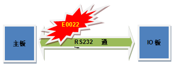
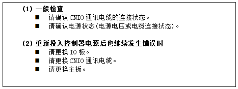
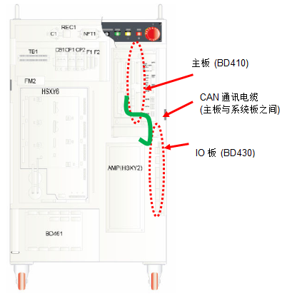
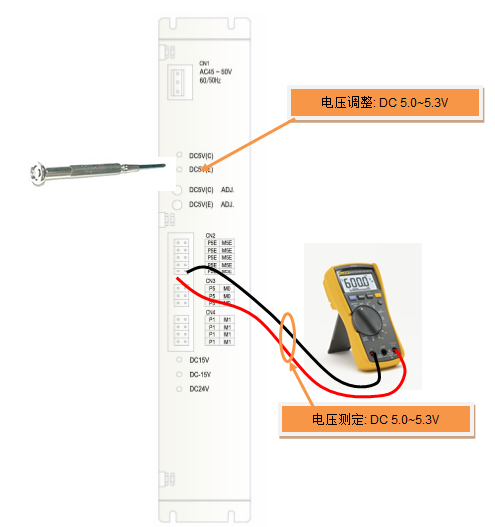
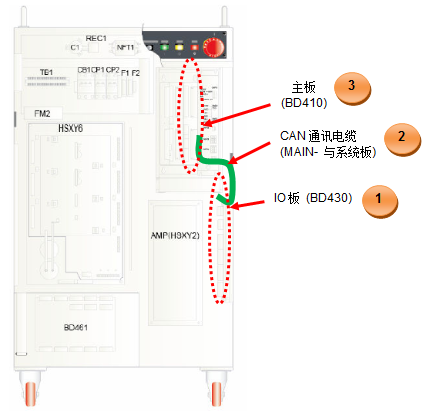

参考
若发生“E0022内部模块间通讯异常”，即使系统板重新开始通讯，主板也不会与系统板重新开始通讯。只有重启控制器才能重新开始通讯。
控制器的IO板通过采用RS232通信与主板交换数据。E0022是主板检测到与IO板之间的通信存在异常时所显示的错误代码。

图 5.18 主板和IO板的通信
IO板是一种主要用于管制控制器电源顺序的输入/输出的模块，发生一次错误，与此有关的所有功能都会被停止，主板将会中断通讯。因此，为了正常恢复所有功能，须重新投入电源到控制器。

(1) 一般检查
若在系统正常运行的状态下发生此错误，请先检查以下项目。
|
|
参考 若发生“E0022内部模块间通讯异常”，即使系统板重新开始通讯，主板也不会与系统板重新开始通讯。只有重启控制器才能重新开始通讯。 |
3. 请确认通讯电缆的连接状态。
请检查主板和系统板之间的通信电缆 (CNIO)是否连接良好。 这可能是因连接器的接触不良所致，请拆卸主板的CNIO连接器和系统板的CNIO连接器后，再次确认此错误是否发生。

图 5.19 主板和IO板的通信电缆连接
4. 请确认电源状态(电源电压或电缆连接状态)。
请确认DC 5V控制电源是否正常供应到系统板。电源有异常时系统板不能运行，因此可能会发生此错误。
请通过SMPS的输出端子检查DC 5V 控制电源电压是否介于5.0V~5.3V范围内。如果电压超出该范围，可能影响通讯状态。
检验点（检查位置）如下图所示，如果超出范围外请在SMPS上将电压调整到5.0V~5.3V范围内。

图 5.20 DC 5V电源电压测定及调整方法
(2) 重启控制器电源后也继续发生错误时
若在重启控制器电源的状态下，因错误已经发生而出现错误信息时，请按照以下顺序更换电路板或电缆，判断是否有异常。
1. 请更换IO板。
2. 请更换CNIO通讯电缆。
3. 请更换主板。
